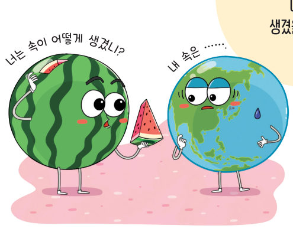
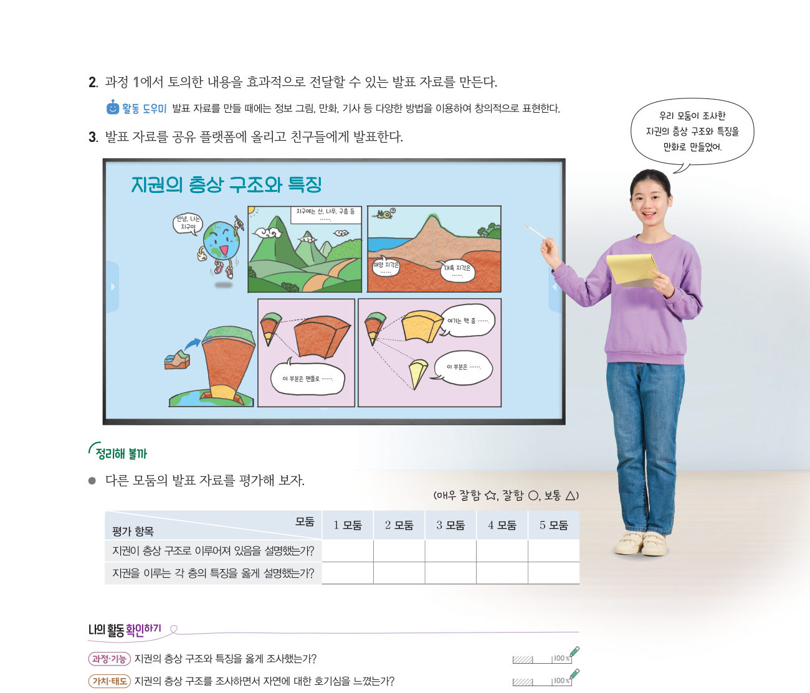
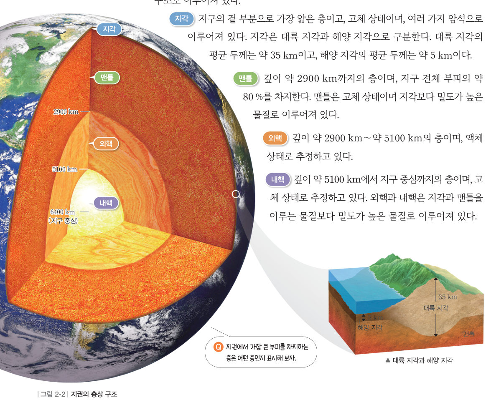
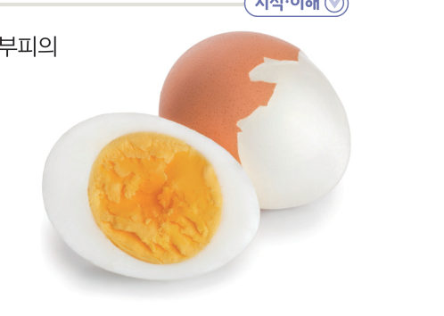
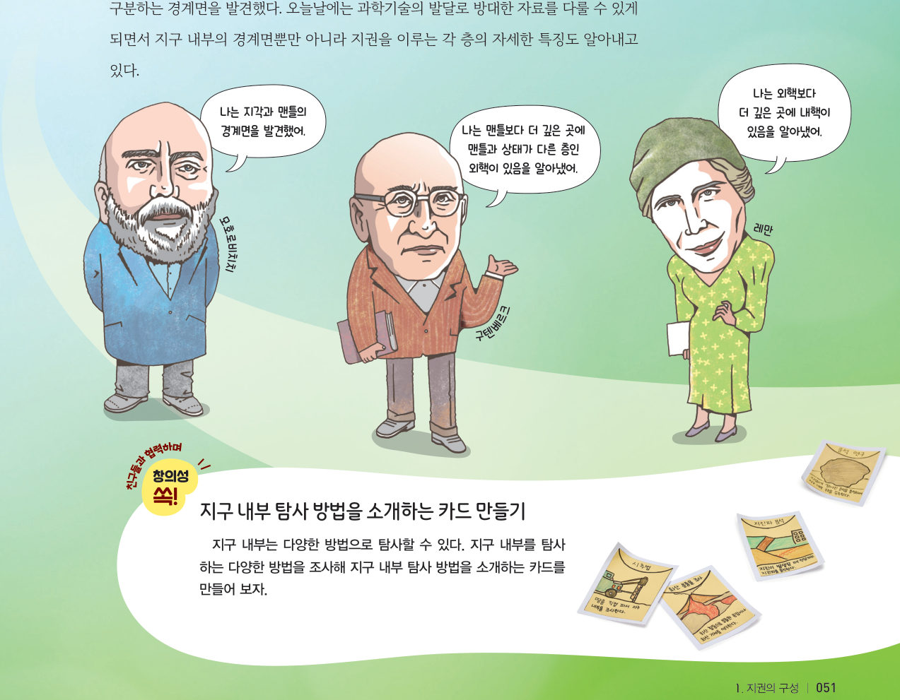

층으로 이루어진
지권
“너는 속이 어떻게 생겼니?” “내 속은 …….” 지구의 내부는 어떻게 생겼을까? 3D 지구를 잘라 지각·맨틀·외핵·내핵을 들여다보고, 깊이 탐사기로 땅속 6400 km까지 내려가 보자.
지구 내부 구조는 땅속 깊숙이 구멍을 뚫고 들어가거나(●시추) 화산이 폭발할 때 나오는 물질을 분석하여 알아낼 수 있다. 그러나 이러한 방법으로는 지구 내부 전체를 알아내는 데 한계가 있다. 이 때문에 과학자들은 지진이 일어날 때 발생하는 지진파를 이용하여 지구 내부 전체를 간접적으로 조사해 지구 내부가 층상 구조로 이루어져 있음을 알아냈다.
| 층 | 상태 | 깊이 |
|---|---|---|
| 지각 | 지표~대륙 약 km · 해양 약 5 km | |
| 맨틀 | 지각 아래~약 km | |
| 외핵 | 약 2900 km~약 km | |
| 내핵 | 약 5100 km~약 6400 km(지구 중심) |

그림 2-2와 같이 지권은 지각, 맨틀, 외핵, 내핵이라는 네 개의 층으로 구분된 층상 구조로 이루어져 있다.
지각 지구의 겉 부분으로 가장 얇은 층이고, 고체 상태이며, 여러 가지 암석으로 이루어져 있다. 대륙 지각의 평균 두께는 약 35 km이고, 해양 지각의 평균 두께는 약 5 km이다.
맨틀 깊이 약 2900 km까지의 층이며, 지구 전체 부피의 약 80 %를 차지한다. 맨틀은 고체 상태이며 지각보다 밀도가 높은 물질로 이루어져 있다.
외핵 깊이 약 2900 km~약 5100 km의 층이며, 액체 상태로 추정하고 있다.
내핵 깊이 약 5100 km에서 지구 중심까지의 층이며, 고체 상태로 추정하고 있다. 외핵과 내핵은 지각과 맨틀을 이루는 물질보다 밀도가 높은 물질로 이루어져 있다.

| 층 | 실제 두께(km) | 모형 두께(cm) |
|---|---|---|
| 지각(대륙) | 약 35 | |
| 맨틀 | 약 2865 | |
| 외핵 | 약 2200 | |
| 내핵 | 약 1300 |


모호로비치치(1857~1936)는 1909년에 발생한 지진 자료를 분석하여 지각과 맨틀을 구분하는 경계면을 발견했다. 이후 구텐베르크(1889~1960)는 1914년에 맨틀과 외핵을 구분하는 경계면을 발견했으며, 레만(1888~1993)은 1936년에 외핵과 내핵을 구분하는 경계면을 발견했다.
| 지각과 맨틀의 경계면 | |
| 맨틀과 외핵의 경계면 | |
| 외핵과 내핵의 경계면 |
| ③ 지권은 지표에서부터 지각 - 맨틀 - 내핵 - 외핵으로 구분된다. | |
| ④ 지권에서 가장 얇은 층은 지각이다. | |
| ⑤ 지권 중 상태가 다른 층은 맨틀이다. | |
| ⑥ 지구 전체 부피의 약 80 %를 차지하는 층은 외핵이다. | |
| ⑦ 내핵은 맨틀보다 밀도가 높은 물질로 이루어져 있다. |
⑨ 두께가 두꺼운 지각 , 그 명칭
⑩ 밀도가 가장 큰 곳 , 그 명칭
2지권의 층상 구조
⑵ : 가장 얇은 층, 대륙 지각(약 35 km)과 해양 지각(약 5 km)
⑶ 맨틀: 지구 전체 부피의 약 %, 고체 상태
⑷ 외핵: 상태로 추정 / 내핵: 고체 상태로 추정
| 평가 기준 | 스스로 평가 |
|---|---|
| 과정·기능 지권의 층상 구조와 특징을 옳게 조사했는가? | |
| 가치·태도 지권의 층상 구조를 조사하면서 자연에 대한 호기심을 느꼈는가? |